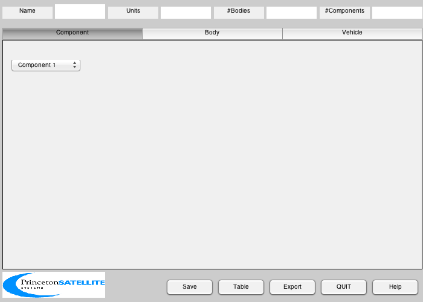
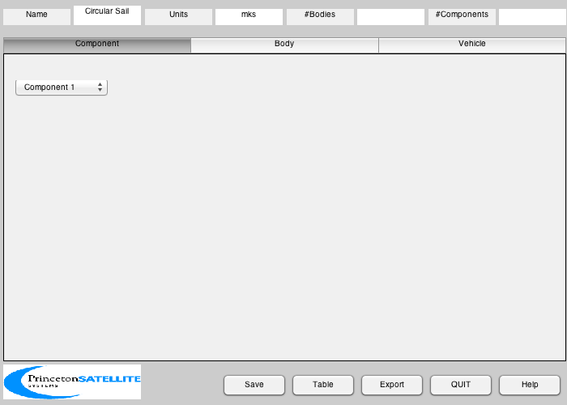
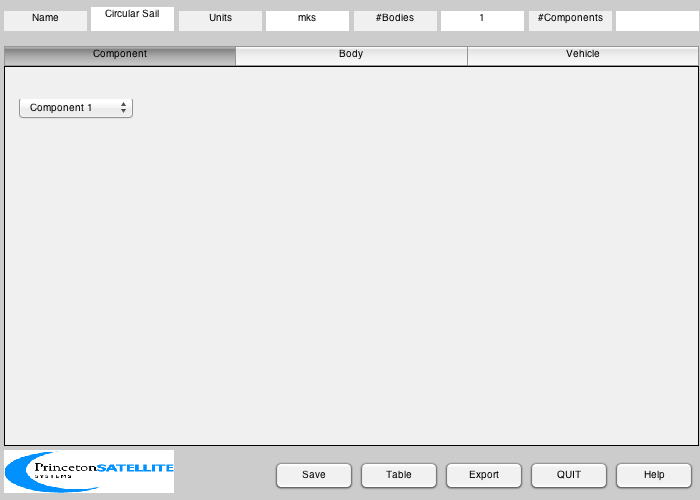
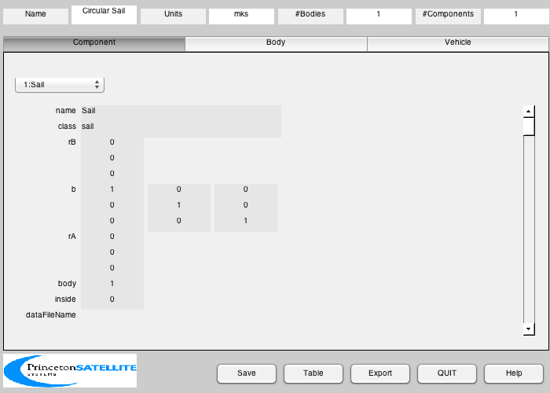
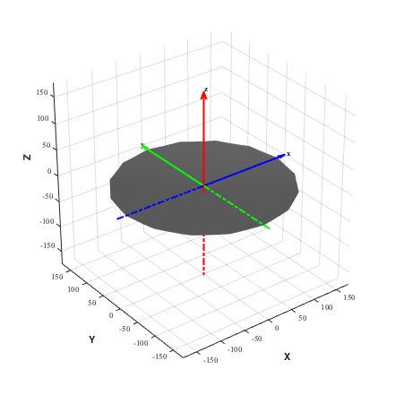

Design a circular nonideal sail with billow using SailMesh.
This example has the sail front along +z. The sail is not perfectly specular and the front and back properties are different.
Since version 7. ------------------------------------------------------------------------ See also: SailMesh, HCircularBillow, BuildCADModel, CreateBody, CreateComponent, DrawSCPlanPlugIn, VFToMassStructure, FindDirectory, SaveStructure, AddAxes ------------------------------------------------------------------------
Contents
%------------------------------------------------------------------------------- % Copyright (c) 2007 Princeton Satellite Systems, Inc. All rights reserved. %-------------------------------------------------------------------------------
Initialize
%----------- BuildCADModel( 'initialize' );
Add general properties
%----------------------- BuildCADModel( 'set name' , 'Circular Sail' ); BuildCADModel( 'set units', 'mks' ); %------------------------------------------------------------------
Create CAD bodies first
%------------------------------------------------------------------
Only one body to create
%------------------------ m = CreateBody( 'make', 'name', 'Sail' ); BuildCADModel('add body', m );
This creates the connections between the bodies
%------------------------------------------------ BuildCADModel( 'compute paths' ); %------------------------------------------------------------------
Create CAD Components second
%------------------------------------------------------------------ % Get sail shape theta = [0:15]*pi/8; rSail = 160; % m x = rSail*cos(theta); y = rSail*sin(theta); dBillow = struct('b',0.2,'r',rSail); [v,f] = SailMesh( x, y, 'HCircularBillow', dBillow, 3 ); % Mass properties arealMass = 0.005; % kg/m2 mass = VFToMassStructure( v, f ); mass.mass = mass.mass*arealMass; mass.inertia = mass.inertia*arealMass;
Create the component
%--------------------- m = CreateComponent( 'make', 'sail','vertex', v,'face', f, 'rA', [0;0;0],... 'name', 'Sail', 'body', 1, 'mass', mass, ... 'emissivity', [0.1 0.3],'sigmaS',[0.95 0.7],'sigmaA',[0.02 0.2],'sigmaD',[0.03 0.1],... 'faceColor', 'mirror','inside',0); BuildCADModel( 'add component', m );
Update
%------- BuildCADModel( 'update body mass properties' ); %------------------------------------------------------------------
Export
%------------------------------------------------------------------ g = BuildCADModel( 'get cad model' ); c = cd; cd(FindDirectory('SailData')); SaveStructure( g, 'CircularSail' ); cd(c);
3D View
%-------- DrawSCPlanPlugIn('initialize',g); AddAxes(1.1*rSail,[],[],gcf) light('position',[0 0 1]) %-------------------------------------- % PSS internal file version information %--------------------------------------
ans =
Figure (2: 3D Vehicle Plan) with properties:
Number: 2
Name: '3D Vehicle Plan'
Color: [1 1 1]
Position: [500 320 460 460]
Units: 'pixels'
Use GET to show all properties
